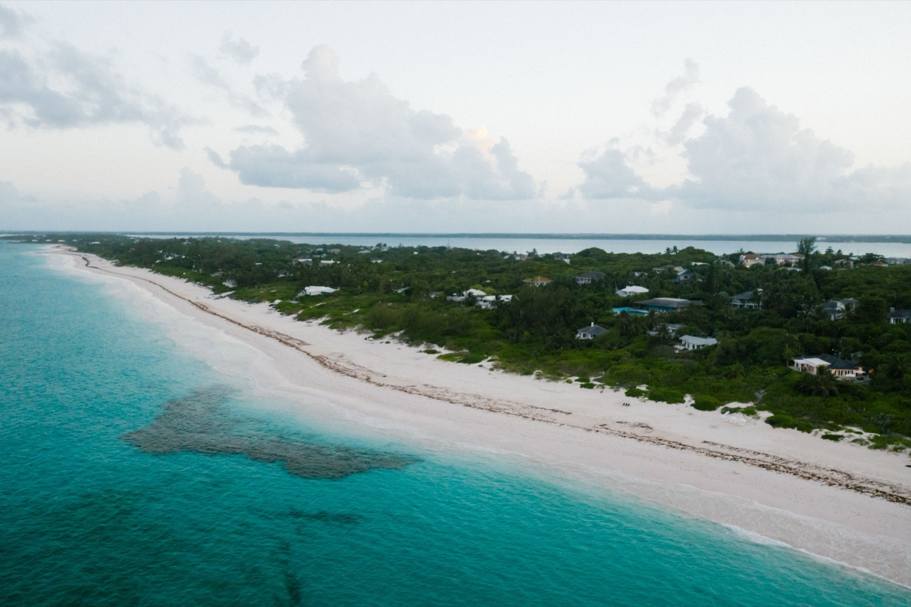
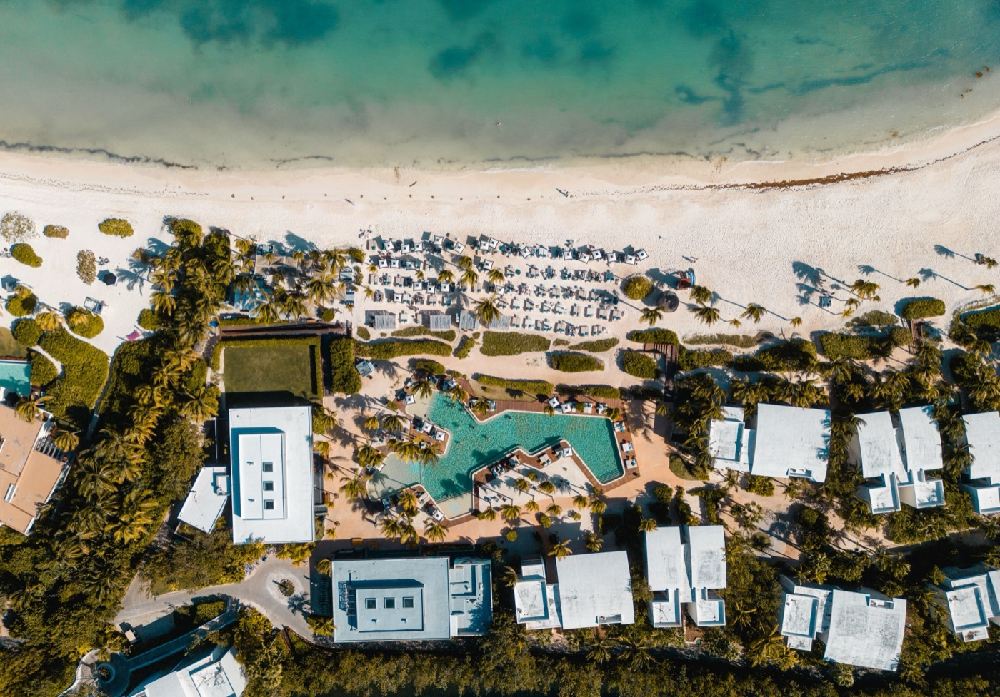

Moving to Turks & Caicos in 2026
Grace Bay, the US dollar, 75 minutes from Miami, and zero direct tax. Also the second-highest homicide rate in the region, which almost nobody writing about this place will tell you.

Quick take
- TaxZero on income, capital gains, estate, and property. Revenue comes from duties and stamp duty.
- Cost of livingBrutal. A 3-bed in central Provo averages $5,567 a month, utilities another $557.
- Residency$500,000 invested on Provo for annual temporary residence. $1M for investment PRC.
- The rule changeA proposed amendment would push the time-based PRC route from 10 years to 15.
- SafetyLevel 1 advisory, but a 2025 homicide rate of 57.6 per 100,000. Read that section.
- Best forPeople with real capital who want a US-dollar, zero-tax base 75 minutes from Miami.
Turks and Caicos sells one of the most seductive packages in the Caribbean, and most of it is true. Grace Bay really is voted the world's best beach with tedious regularity. The currency really is the US dollar, the language really is English, Miami really is 75 minutes away, and the tax rate on your income really is zero. What the brochures leave out is that this is one of the most expensive places to live in the hemisphere, that the residency system is built to keep people out rather than let them in, and that the crime statistics are genuinely alarming in a way the Level 1 travel advisory does not capture.
Tax: actually zero
This is not a special regime with conditions attached, which makes it unusual. Turks and Caicos levies no personal income tax, no corporate tax, no capital gains tax, no inheritance or estate duty, no wealth tax, and no annual property tax. There is no VAT either.
Revenue comes from import duty, stamp duty on property transfers, and a tax on rental income, which is why everything in the shops costs what it costs. If you are American, none of this changes your IRS obligations, since the US taxes citizens on worldwide income wherever they live.
What it costs, with real numbers
Housing is the whole story. A three-bedroom apartment in central Providenciales averages about $5,567 a month, dropping to roughly $3,480 further out. Basic utilities for an 85 square metre apartment run around $557 a month, because electricity here is generated by burning imported diesel and priced accordingly.
For scale, Providenciales runs roughly 54% more expensive than Charleston, South Carolina, and about 30% above Santa Cruz, California. That is not a typo, and it is not a resort-season distortion. Rents compete directly with short-term holiday lets, which sets a floor no long-term tenant can argue with.
One honest caveat on all of these figures: crowd-sourced cost data for Provo is thin, drawn from a handful of contributors. Treat the numbers as the right order of magnitude rather than gospel, and go price things yourself before you commit.
Is Turks & Caicos safe?
This is where we part company with most guides, which repeat the Level 1 advisory and move on.
The advisory is real, and so is this: Turks and Caicos recorded a record 48 murders in 2024 in a population under 50,000. That is a homicide rate of 103.1 per 100,000, which put a British Overseas Territory in the same statistical bracket as the most violent countries on earth. Around 80% of violent crime involved illegally imported firearms, and close to 90% of killings were gang-related or retaliatory.
Murders recorded in Turks & Caicos, by year
Counts vary by a point or two between sources. In a population under 50,000, a handful of incidents swings the per-capita rate enormously, which is why the trend matters more than any single year.
The genuinely good news is what happened next. Murders fell to 27 in 2025, a drop of 43.5%, alongside a 25% fall in attempted murders, 22% in rapes, and 29% in firearm discharges. Police credit sustained operations against a single dominant gang, including the killing of its leader in August 2025. That is one of the sharpest one-year reversals anywhere in the region.
The sobering half: even after that fall, the 2025 rate of 57.6 per 100,000 was the second highest in the Caribbean, behind only Haiti. Grievous bodily harm cases actually rose 63% over the same period, and July 2025 brought the territory's first mass shooting, which killed four people and injured nine.
How to hold both facts at once
Violence here is geographically concentrated, overwhelmingly in the Blue Hills and Five Cays settlements, and it is gang-on-gang. The Police Commissioner has said the chance of a visitor being physically harmed is close to zero, and the tourism corridors are policed accordingly. In practice, expats living in Grace Bay, Leeward, or Chalk Sound experience a very different island from the one in the homicide statistics.
That is a real distinction and we are not going to pretend otherwise. But it is also exactly the kind of two-tier arrangement worth understanding before you move somewhere, rather than after. Ask a resident, not a realtor.
Getting permission to stay
To live here legally you need one of three documents from the Border Control Agency, and none of them are casual.
- Temporary Residence Certificate: the route for people with outside income. Invest at least $500,000 on Providenciales or West Caicos, or $250,000 on the other islands. Renews annually at $1,500. No right to work locally.
- Work Permit: employer-sponsored, with labour-market testing, medicals, and real delays. The employer drives the process, not you.
- Permanent Residence Certificate: either through about ten years of continuous legal residence (fee $10,000), or by investment (fee $25,000) requiring $1,000,000 on Providenciales or $300,000 on the other islands. An investment-only PRC usually carries no right to work.
British Overseas Territories citizenship becomes possible later, typically after five years including twelve months holding a PRC.
A rule change worth watching
Proposed amendments to the Immigration Ordinance would tighten this considerably: the time-based PRC qualifying period would rise from 10 years to 15, a new residence-by-investment category would run 25 years and be renewable on conditions, and a spouse endorsed on a PRC could apply in their own right after 11 years. Officers would gain expanded powers, and everyone would be required to carry proof of identity and status at all times.
These come from a proposed amendment, not confirmed enacted law, so verify current status with the TCI Border Control Agency or Invest Turks and Caicos before you build a plan around the ten-year number. If you are on the long route, five extra years is not a detail.
Where foreigners settle

Roughly 25,000 foreign residents live here, and they are overwhelmingly on Providenciales, universally called Provo. That is where Grace Bay, the marinas, the hospital, the good schools, and essentially all of the services are. Grand Turk holds the administrative capital, Cockburn Town, and is far quieter, cheaper, and less equipped. North and Middle Caicos are quieter still, which is the point for some people and disqualifying for most.
So is Turks & Caicos right for you?
- Strong fit if: you have real capital, you want a genuinely zero-tax base in US dollars a short flight from the East Coast, and your life is oriented around the water.
- Think hard if: your budget has edges. This island punishes optimistic arithmetic more than almost anywhere in the region.
- Do more homework if: you are counting on the ten-year residence route, or you have not looked past the Level 1 rating at what the crime numbers actually say.
The best advice anyone gave us about Provo still holds: rent for a season before you buy anything. The island is spectacular and it is expensive in ways that do not show up until the second electricity bill.
At Provo prices, building beats buying more often than people expect
When a three-bedroom rents for $5,500 a month and every input is imported, the arithmetic on owning versus renting stops being obvious. SORA designs and builds homes across the tropics, with our deepest roots in Panama and Costa Rica, where residency is straightforward and building costs a fraction of the coastal Caribbean. If the move is really about a place of your own in the sun, it is worth seeing what a fixed-price build looks like before you commit to any one island.
Frequently asked questions
Does Turks & Caicos have income tax?
No. There is 0% on all direct taxes: no personal income tax, corporate tax, capital gains tax, estate or gift duty, wealth tax, VAT, or annual property tax. Revenue comes from import duty, stamp duty on property transfers, and a tax on rental income. US citizens still file with the IRS on worldwide income.
How do you get residency in Turks & Caicos?
Three routes. A Temporary Residence Certificate needs $500,000 invested on Providenciales or West Caicos, or $250,000 on other islands, renewed yearly at $1,500. A work permit is employer-sponsored. A Permanent Residence Certificate comes after about ten years of legal residence (fee $10,000) or by investing $1,000,000 on Provo or $300,000 elsewhere (fee $25,000).
Is Turks & Caicos safe to live in?
The advisory is Level 1, but the numbers deserve a closer look. A record 48 murders in 2024 gave a rate of 103.1 per 100,000. Enforcement against one dominant gang cut that to 27 murders in 2025, down 43.5%, yet the resulting 57.6 per 100,000 was still second in the region behind Haiti. Violence concentrates in the Blue Hills and Five Cays settlements and rarely involves visitors.
Is Turks & Caicos expensive to live in?
Very. A three-bedroom in central Providenciales averages about $5,567 a month, with basic utilities near $557 for an 85 square metre apartment because power is diesel-generated. Provo runs roughly 54% above Charleston, South Carolina. Zero direct tax is the offset.
Is the ten-year residency route changing?
Possibly. Proposed Immigration Ordinance amendments would raise the time-based PRC qualifying period from 10 to 15 years, create a 25-year residence-by-investment category, and let a spouse endorsed on a PRC apply independently after 11 years. This is a proposal rather than enacted law, so confirm current status with the TCI Border Control Agency.
Where do expats live in Turks & Caicos?
Almost all of the roughly 25,000 foreign residents live on Providenciales, known as Provo, which holds Grace Bay, the hospital, the schools, and nearly all services. Cockburn Town on Grand Turk is the administrative capital and far quieter. North and Middle Caicos are quieter still.
Sources & verification
Figures in this guide were checked against primary and authoritative sources on 27 July 2026. Immigration, tax, and cost figures change, so always confirm the current rules with the official body or a licensed professional before acting.
- TCI Border Control Agency · official PRC and residency requirements
- Invest Turks & Caicos · official investment-residency thresholds
- US State Department · travel advisory level and entry requirements
- InSight Crime · 2025 regional homicide round-up and per-capita rates
- Wise · 2026 Providenciales cost-of-living figures